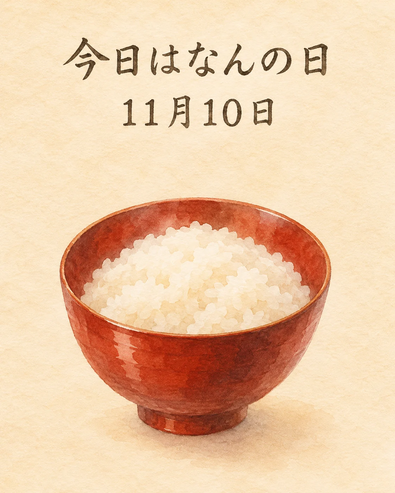

11月10日は、「漆塗りのお椀でご飯をいただく記念日」。別名「めしまりの日」です🍚
日本漆器協同組合連合会が、2021年に制定しました。日付は「1＝椀（One）」が三つと、「0＝まり」を組み合わせた、一汁一菜の三つのお椀にちなむ語呂合わせです。
木の器のぬくもりを感じながら、ご飯を味わうきっかけに。そんな思いが込められています。
お米の香りや、手にした器の感触。和食の楽しみは、料理だけでなく、器との出会いにも広がっていますね。
季節の味わいとともに、心ほどけるひとときをお過ごしください✨
和食のご飯と、器のぬくもり
制定元の日本漆器協同組合連合会は、2021年8月27日の理事会で11月10日をこの記念日に制定したと案内しています。越前漆器協同組合の資料でも、同じ日付と制定者を確認できます。毎年11月10日の記念日なので、2026年は11月10日（火）です。
米をいただく和食の文化を、料理を盛る器から見つめる日として紹介します。本記事は記念日の紹介であり、当店での漆器の使用、当日の料理・価格・在庫・特別企画を案内するものではありません。
出典：日本漆器協同組合連合会「11月10日は『漆塗りのお椀でご飯をいただく記念日』」（制定日・名称・由来）、越前漆器協同組合「11月は、『越前漆器うるし月間』」（参考：漆器に関係する記念日）（2026年11月10日確認）。過年度の催事を2026年の開催案内として紹介していません。